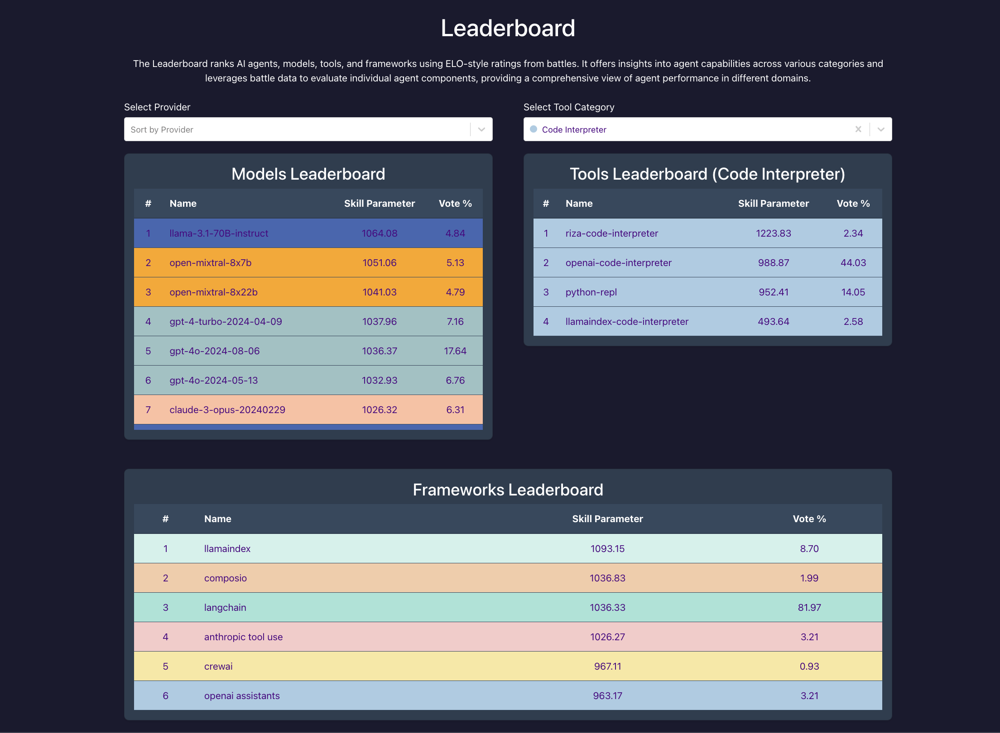

🦍 Gorilla X LMSYS Chatbot Arena
Agent Arena Multi-Turn Evaluation
Agent Arena
Nithik Yekollu Shreyas Rana Kireeti Chilakamarry Vikram Iyer Kai Wen Wei-Lin Chiang Anastasios Angelopoulos Joseph Gonzalez Ion Stoica Shishir G. Patil

Agent Arena: Evaluating and Comparing LLM Agents Across Models, Tools, and Frameworks
Introduction
Building on our previous work with 🤖 Agent Arena, we are excited to announce a significant enhancement to our multi-turn evaluation system. The key innovation in this update is our improved ranking methodology that better accounts for the varying complexity and reliability of different conversation lengths in agent battles. It is important to note that the single and multi-turn evaluation algorithms are extremely similar, the difference being that the multi-turn evaluation also takes in the number of turns it took for a user to report model A is better than B or vice versa.
This post focuses specifically on the enhanced Extended Bradley-Terry Model with sophisticated multi-turn weighting that provides more accurate rankings for agents across varying conversation lengths. Rather than treating all battles equally, our logistic regression system weighs each ranking based on conversation length, with the weight and conversation length being inversely related.
Quick Links:
- Arena: Agent-Arena
- Leaderboard: Agent Leaderboard
- Agent Battle Data: Agent Battle Data
Evaluation and Ranking System
Agent Arena employs a comprehensive ranking system that evaluates agents based on their performance in head-to-head comparisons. The leaderboard ranks agents based on their overall performance and the performance of their individual components (LLM model, tool, and framework). The ranking process is informed by both user evaluations and an ELO-based rating system, commonly used in competitive ranking environments, where agent performance is dynamically adjusted after each task or comparison.

The leaderboards analyzing the subcomponents of the agents
The rating system in Agent Arena is designed to reflect the cumulative performance of agents across a wide range of tasks, taking into account factors such as:
- Model performance: Evaluating the effectiveness of the underlying LLM models (e.g., GPT-4, Claude, Llama 3.1).
- Tool efficiency: Ranking the tools agents use to complete tasks (e.g., code interpreters, APIs like Brave Search or Yahoo Finance).
- Framework functionality: Assessing the broader frameworks that support agents, such as LangChain, LlamaIndex, and CrewAI.
Check out the latest rankings for each category on our leaderboard: Agent Arena Leaderboard.
⚖️ Evaluating Agents with the Extended Bradley-Terry Model
The Extended Bradley-Terry Model
Agent Arena uses the Bradley-Terry extension to compare agents based on their subcomponents, including tools, models, and frameworks. In addition to atomically evaluating the agents, we also assess each subcomponent's performance to accurately pinpoint where the agent's strength lies. For example, supposed our first agent is a combination of LangChain, Brave-Search, and GPT-4o-2024-08-06, while the second agent is a combination of LlamaIndex, Wikipedia, and Claude-3-5-Sonnet-20240620.
Therefore, we propose the following observation model for the Extended Bradley-Terry Model. Given P_1,
For each battle \(i \in [n]\), let we have a a prompt and two agents, encoded as the following:
Agent A: The first agent being compared with an elo ofE_Aand with the subcomponents(A_T, A_M, A_F)Agent B: The second agent being compared, having an elo ofE_Band with the subcomponents(B_T, B_M, B_F)Y_i: Outcome of the battle (1 for win, 0 for loss)
🧑💻 Example: LangChain Brave-Search Agent vs. LlamaIndex Wikipedia Agent
Let's walk through an example to illustrate how the Extended Bradley-Terry Model works in practice. Take the following agents and their subcomponents:Agent_Ais the Langchain Brave-Search Agent, using the following subcomponents:{ Brave-Search (A_T), LangChain (A_F), and GPT-4o-2024-08-06 (A_M) }and an Elo of 1600.Agent Bis the LlamaIndex Wikipedia Agent, with the subcomponents:{Wikipedia (B_T), LlamaIndex (B_F), and Claude-3-5-Sonnet-20240620 (B_M)}and an Elo of 1500.
In a traditional Elo system, the Brave-Search agent would win 64% of the time. Then given the actual outcome of the battle, Y_1, assuming that the Brave-Search agent wins, the new rating of the agents would be 1601.44 and 1498.56, respectively.
In the Bradley-Terry model, however, we calculate the ratings by minimizing the following loss function given the real-world battle outcome: Y_i:
\[L = -\sum_{i=1}^{n} Y_i \cdot log(\frac{1}{1 + e^{E_A - E_B}}) + (1 - Y_i) \cdot log(\frac{1}{1 + e^{E_B - E_A}})\]
Finally, to get a holistic evaluation of an agent, we combine all its subcomponents into a single analysis. Instead of treating each subcomponent as an isolated entity, we consider their interaction within the broader agent architecture. For each battle, we build a design matrix X that represents all the subcomponents involved. Here, let's assume that A, the Brave-Search agent, wins the battle. In that case, the design matrix would look like this:
\[X = [ +log(A_T), +log(A_M), +log(A_F), -log(B_T), -log(B_M), -log(B_F) ]\]
Using this design matrix, we can evaluate the collective contribution of the subcomponents with a single calculation. To determine the regresion coefficients, we use logistic regression with L2 regularization to control for overfitting and confounding effects caused by frequent pairings.
🎯 Multi-Turn Evaluation Weighting
For multi-turn evaluations, we apply a sophisticated weighting scheme that accounts for the varying complexity and reliability of different conversation lengths. The idea is that longer conversations are less reliable than shorter ones because they take longer to achieve a desired outcome. We weight each evaluation accordingly — we use a logistic taper function that's inversely proportional to the number of turns:
\[w(x) = \frac{2}{1 + e^{k(x-1)}}\]
where \(x\) is the number of turns and \(k = 0.4\) is the decay parameter.
This function assigns higher weights to shorter conversations (which tend to be more reliable) while gradually reducing the weight for longer conversations. The parameter k = 0.4 controls the rate of decay, ensuring that extremely long conversations don't dominate the ranking system.
During the logistic regression fitting process, we apply these weights as follows:
Y[cur_row] = 1.0 if row['rating'] == 'A is better' else 0.0
# sample_weights.append(1) # Original approach: uniform weighting
sample_weights.append(logistic_taper(numTurns)) # New approach: turn-based weighting
...
lr = LogisticRegression(fit_intercept=False, tol=1e-6, penalty='l2', C=1.0, solver='liblinear')
lr.fit(X, Y, sample_weight=sample_weights)
This weighting approach ensures that the Bradley-Terry model accurately reflects agent performance across different conversation lengths and complexities, providing more nuanced and reliable rankings for multi-turn agent evaluations.
By using this combined approach, Agent Arena ensures more accurate rankings across agents and their subcomponents. 🔄 This method provides clearer insights into each agent's performance and contributions, preventing the bias that can occur from frequent pairings or overused configurations.
🎉 As a result, our system generates a real-time, continuously updating leaderboard that not only reflects the agents' overall performance but also their specific subcomponent strengths. 🏆
Check out our live leaderboards for agents, tools, models, and frameworks here!
Conclusion
This enhanced version of Agent Arena represents a significant step forward in multi-turn agent evaluation. By implementing our improved Bradley-Terry model with sophisticated turn-based weighting, we provide more nuanced and reliable rankings that better reflect agent performance across different conversation complexities.
The key innovation - our logistic taper function that weighs evaluations based on conversation length - ensures that our ranking system accurately accounts for the varying reliability of different interaction patterns. This advancement helps users make more informed decisions about agent selection for their specific use cases.
We invite researchers, developers, and AI enthusiasts to explore the enhanced Agent Arena and contribute to the ongoing development of better evaluation methodologies for multi-turn agent interactions.
We hope you enjoyed this blog post. We would love to hear from you on Discord, Twitter
(#GorillaLLM), and GitHub.
Citation
If you would like to cite Agent Arena:
@inproceedings{agent-arena,
title={Agent Arena},
author={Nithik Yekollu and Shreyas Rana and Kireeti Chilakamarry and Vikram Iyer and Kai Wen
Wei-Lin Chiang and Anastasios Angelopoulos and Joseph E. Gonzalez and
Ion Stoica and Shishir G. Patil},
year={2025},
howpublished={\url{https://gorilla.cs.berkeley.edu/blogs/15_agent_arena_multiturn_evaluation.html}},
}